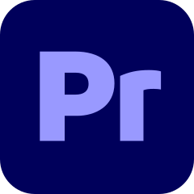
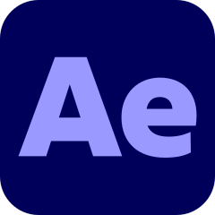
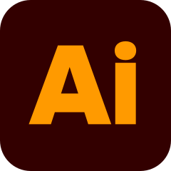
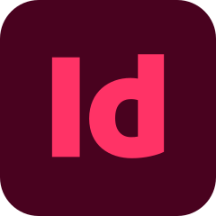
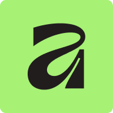

Nick Drescher / Visual Creative
Nick Drescher
Portfolio
“Making bad art is better than making no art.”
Hi, ich bin Nick Drescher, und ich mache mit Begeisterung Videos und Filme, seit ich zehn Jahre alt bin. Was mit meinem iPhone im Kinderzimmer begann, entwickelte sich über die Jahre zu einer Leidenschaft, die inzwischen auch meinen beruflichen Weg prägt. Während meiner Ausbildung zum Gestaltungstechnischen Assistenten im Bereich Medien und Kommunikation an der Medienschule Babelsberg, die ich im Juli 2026 abgeschlossen habe, konnte ich meine gestalterischen und technischen Kenntnisse vertiefen und bei meinen ersten professionellen Filmdrehs praktische Erfahrungen sammeln.
Mehr über mich
Seit Oktober 2026 bin ich bei der Elaria GmbH im Bereich Social Media & Content Creation tätig, wo ich kreative Inhalte entwickle und produziere sowie die visuelle Kommunikation der Marke mitgestalte. Dabei habe ich die Möglichkeit, eigene Ideen einzubringen und umzusetzen, während ich mich sowohl kreativ als auch fachlich weiterentwickle.
Auch in Zukunft möchte ich neue Ideen ausprobieren, meine eigene Bildsprache weiterentwickeln und mit Menschen zusammenarbeiten, die genauso viel Freude daran haben, gemeinsam etwas zu gestalten. Deshalb freue ich mich darauf, neue Kontakte zu knüpfen und spannende Projekte kennenzulernen
- DaVinci Resolve Studio
 Canva
Canva Figma
Figma
Premiere Pro Photoshop
Photoshop
After Effects
Illustrator
InDesign Blender
Blender- Cinema 4D

Affinity
Gut zu wissen.
Welche Erfahrung bringe ich mit?
Durch meine Ausbildung und mehrere Praktika, wie zum Beispiel bei MediaTech Hub, Agentur Schweiger und UVA GmbH, konnte ich bereits praktische Erfahrungen in der Videoproduktion, Gestaltung und Content Erstellung sammeln und meine Kenntnisse in verschiedenen Programmen ausbauen. Seit Oktober 2026 arbeite ich bei „Elaria“ im Bereich Content und Social Media und entwickle dort kreative Videoformate und Inhalte. Darüber hinaus hab ich mit der Blackmagic Pocket Cinema 6k, der Fuji X-T3, Fuji X-T30 und der Panasonic Lumix DC-GH5 gearbeitet.
Mit welchen Programmen arbeite ich?
Zu meinen Werkzeugen gehören DaVinci Resolve Studio, Canva, Figma und die Adobe Creative Cloud mit Premiere Pro, Photoshop, After Effects, Illustrator und InDesign sowie erste Erfahrungen mit Blender, Cinema 4D und Affinity.